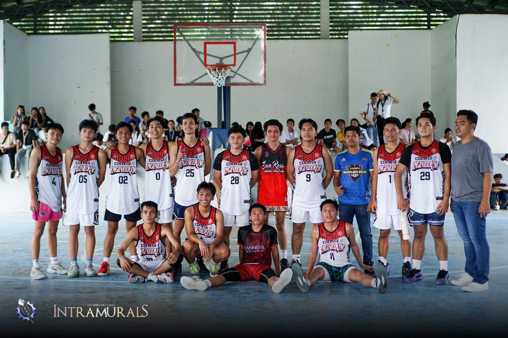
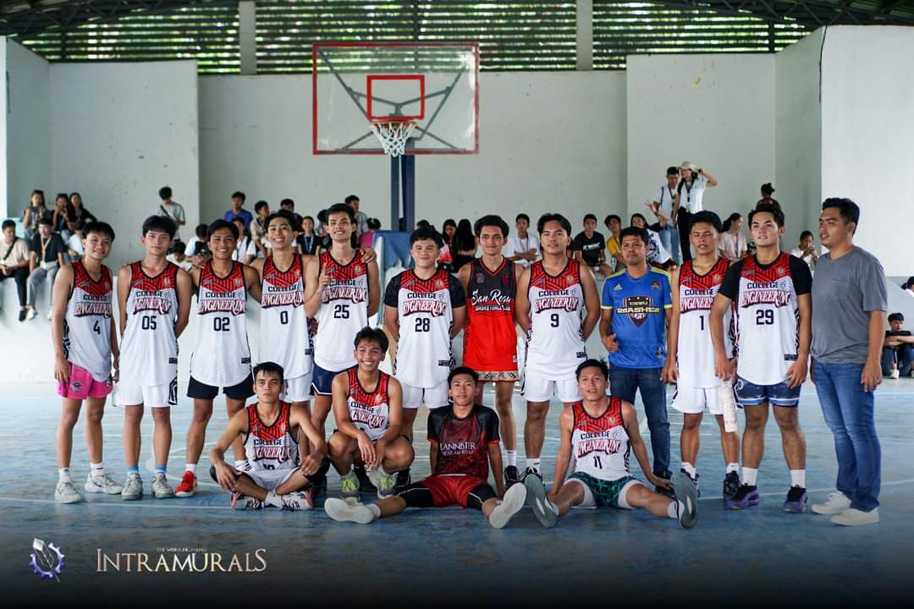

Welcome to Cebu Technological University - Danao Campus
This website will provide you the basketball team of CTU Danao's COE basketball players!
This website will provide you the basketball team of CTU Danao's COE basketball players!
 

The COE basketball team is a cornerstone of school spirit, blending athleticism, competition, and camaraderie into one thrilling experience. Comprising talented student-athletes, the team represents the university in various intercollegiate tournaments, striving for excellence both on and off the court. Each player brings unique skills, whether in fast breaks, precision shooting, or lockdown defense, but success hinges on the seamless teamwork that forms the backbone of the squad. Coaches focus on developing players' individual skills while emphasizing the importance of discipline, strategy, and communication. Beyond the games, the team fosters school pride and unity, rallying students, faculty, and alumni behind their efforts. Practices are rigorous, requiring dedication and a shared commitment to continuous improvement. For the players, being part of the university basketball team is not just about athletic achievement, but about representing the institution with integrity, working towards common goals, and leaving a lasting impact both on and off the court.